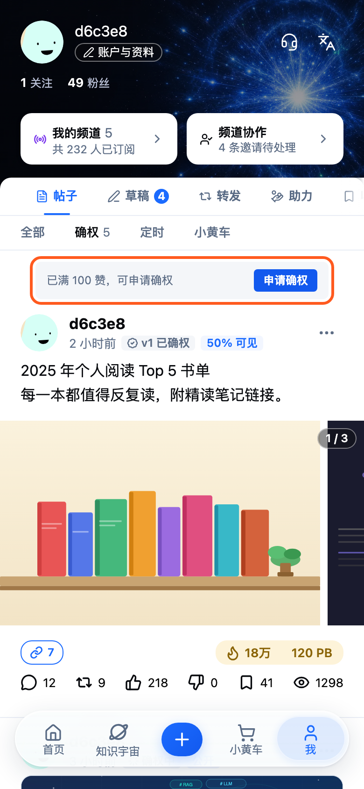
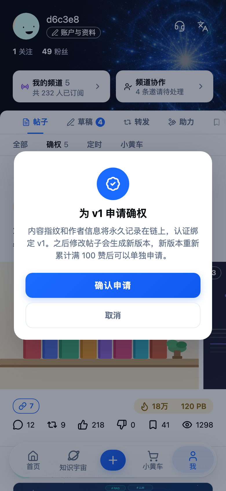
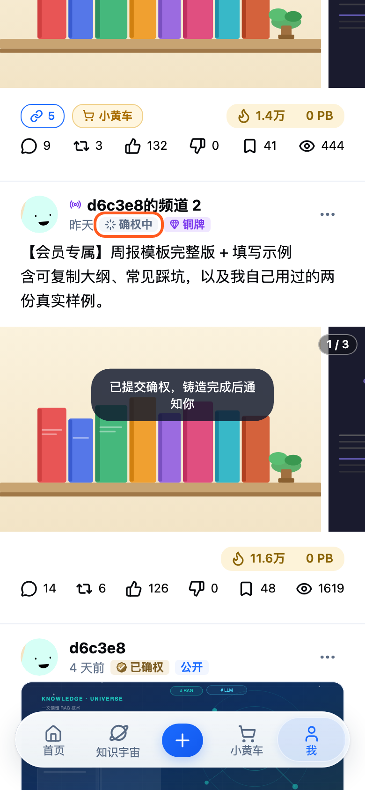
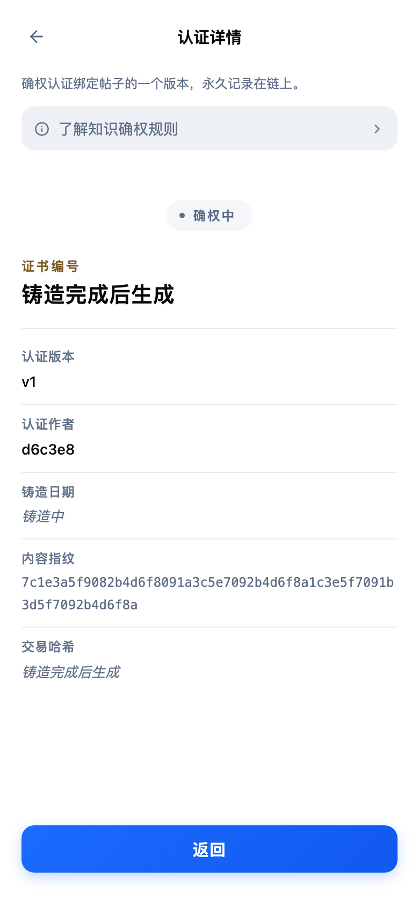
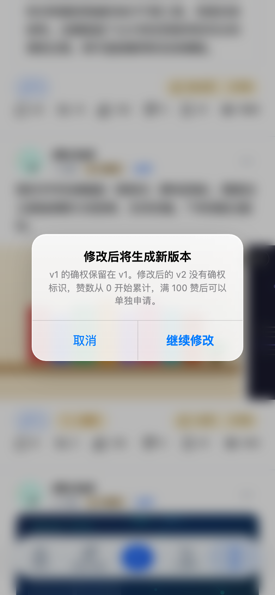
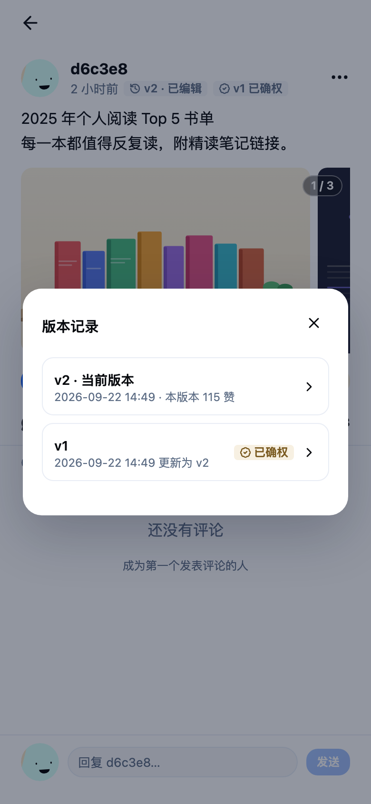
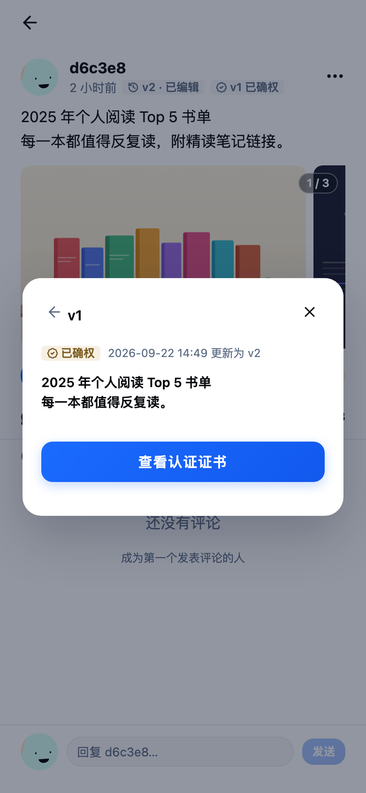
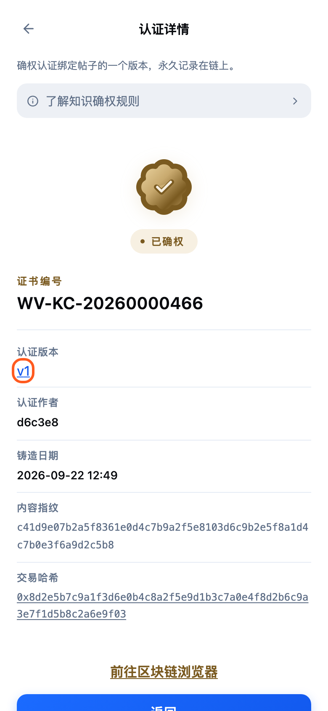
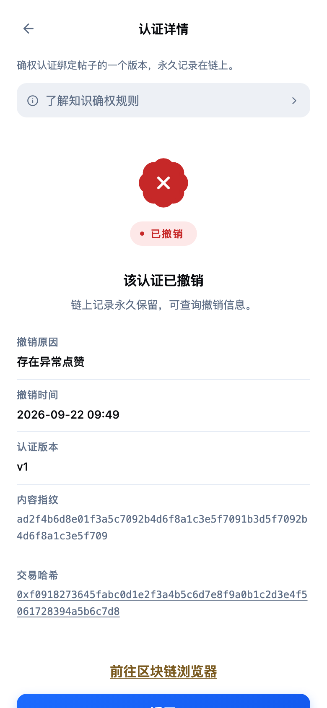
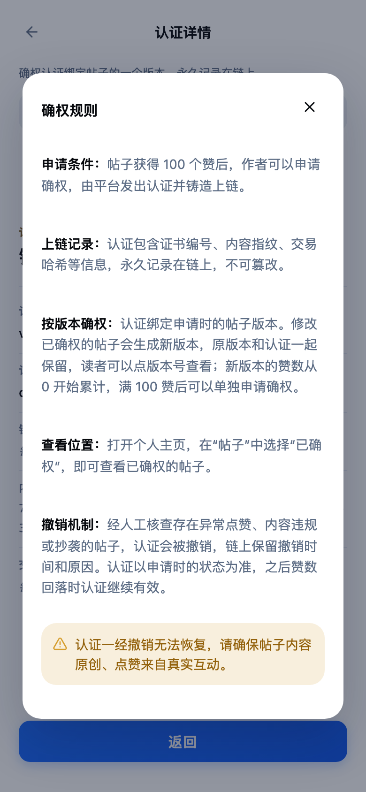

屏 1
个人主页：可申请确权的帖子改动
- 我的主页
- 帖子
- 确权
- 「确权」筛选列出确权中、已确权、已撤销的帖子，数量显示在筛选旁
- 当前版本满 100 赞、还没申请的帖子排在后面，卡片上方一行「已满 100 赞，可申请确权」和「申请确权」按钮
- 列表为空（没有任何认证，也没有满 100 赞的帖子）时显示空态「还没有知识确权认证」，副标题「帖子满 100 赞后可申请知识确权」
开发注意
- 「申请确权」同时出现在自己帖子的「…」菜单和帖子详情的「…」菜单
- 可申请条件：作者本人、当前版本赞数 ≥ 100、当前版本没有任何认证（确权中 / 已确权 / 已撤销都算有）

屏 2
申请确权弹窗新增
- 确权筛选
- 申请确权
- 一个居中确认弹窗完成申请：标题「为 vN 申请确权」，说明内容指纹和作者信息永久记录在链上、认证绑定当前版本、之后修改会生成新版本并可单独申请
- 主按钮「确认申请」：提交后提示「已提交确权，铸造完成后通知你」；次按钮「取消」
开发注意
- 弹窗沿用连接钱包弹窗的样式
- 认证由平台发出，前端没有作者签名环节
- 实名认证和费用后续版本再加

屏 3
提交后：确权中新增
- 确认申请
- 回到确权筛选
- 帖子徽章显示「确权中」，只有作者本人看得到
- 点击进入认证详情查看进度
开发注意
- 后端状态 Pending / Minting 都显示为「确权中」；Failed 的展示待与后端对齐

屏 4
认证详情：确权中改动
- 「确权中」徽章
- 认证详情
- 证书编号、交易哈希显示「铸造完成后生成」，铸造日期显示「铸造中」
- 新增「认证版本」字段；「当前持有人」改为「认证作者」
- 顶部说明改为：确权认证绑定帖子的一个版本，永久记录在链上
开发注意
- 「认证作者」字段取决于 NFT 持有方方案（公司钱包还是用户托管地址），待后端确定

屏 5
编辑有认证的帖子前的提示新增
- 有认证的帖子
- …
- 编辑
- 当前版本有认证（确权中 / 已确权 / 已撤销）时，编辑前弹出「修改后将生成新版本」
- 正文按认证状态说明影响：已确权——原版本的确权保留在原版本；确权中——认证对应提交时的内容，铸造完成后保留在原版本；已撤销——撤销记录保留在原版本
- 新版本没有确权标识，赞数从 0 开始累计，满 100 赞后可以单独申请；选「继续修改」进入编辑，「取消」关闭
开发注意
- 申请过确权的帖子（任一状态）保存编辑时都存版本，保证认证对应的内容不被覆盖
- 从没申请过确权的帖子直接进入编辑，不弹提示，也不存版本
- 自己的帖子现在都能编辑（原来只有频道帖和小黄车帖）

屏 6
帖子详情：版本记录新增
- 帖子详情
- v2 · 已编辑
- 有历史版本的帖子，作者行显示「v2 · 已编辑」，旁边是「v1 已确权」徽章
- 点版本号打开版本记录：当前版本在最前，显示本版本获得的赞数；历史版本标明更新时间和认证状态（已确权 / 确权中 / 已撤销）
开发注意
- 申请过确权的帖子保存编辑时存版本；保存时把旧的标题和正文存档，版本号 +1
- 当前版本没有认证、旧版本已确权时，徽章显示「vN 已确权」（灰色），点击进入该版本的证书
- 每个版本单独计赞：保存新版本时记下当时的累计赞数，当前版本赞数 = 累计赞数 − 该值；帖子上展示的仍是累计赞数


屏 8
认证详情：已确权改动
- v1
- 查看认证证书
- 「认证版本 v1」可点，打开版本记录并定位到该版本
- 「前往区块链浏览器」打开铸造交易哈希，可复制
开发注意
- 区块浏览器目前是站内面板占位，需要开发提供浏览器交易页地址

屏 9
认证详情：已撤销改动
- 「已撤销」徽章
- 认证详情
- 原「已销毁」改为「已撤销」，帖子徽章为红色
- 证书显示「该认证已撤销」、撤销原因、撤销时间，并说明链上记录永久保留
开发注意
- 撤销原因代码与展示文案：fake_likes 存在异常点赞 / content_violation 内容违规 / plagiarism 内容抄袭 / other 其他违规，代码清单待与后端对齐
- 赞数回落不会撤销认证

屏 10
确权规则改动
- 认证详情
- 了解知识确权规则
- 改为五段：申请条件（作者申请，平台发出认证并铸造上链）、上链记录、按版本确权（新版本赞数从 0 开始累计）、查看位置、撤销机制
- 底部提示：认证一经撤销无法恢复，请确保帖子内容原创、点赞来自真实互动